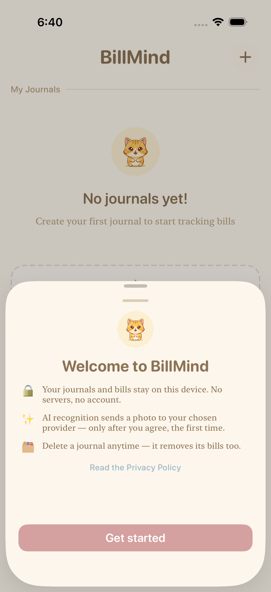
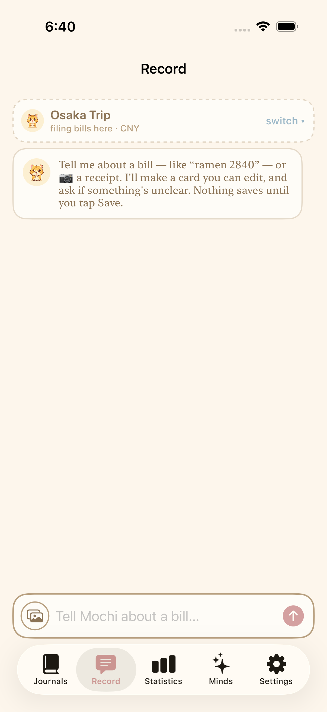
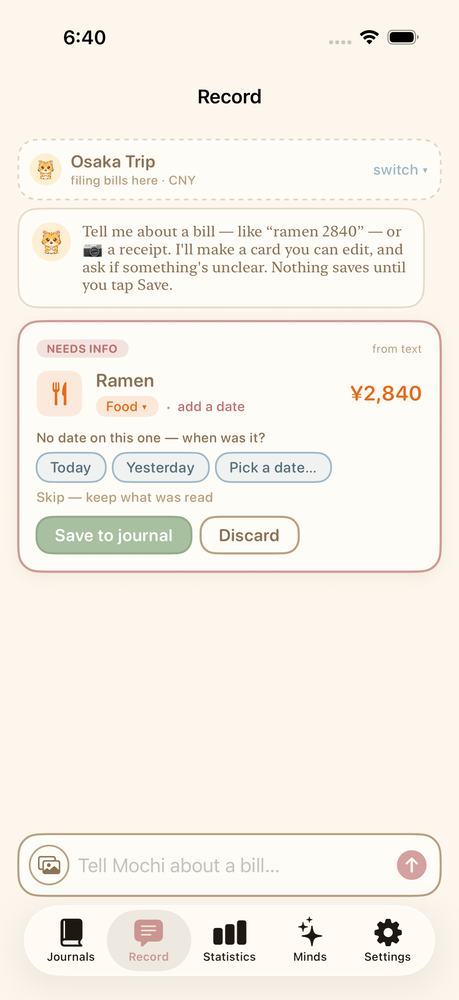
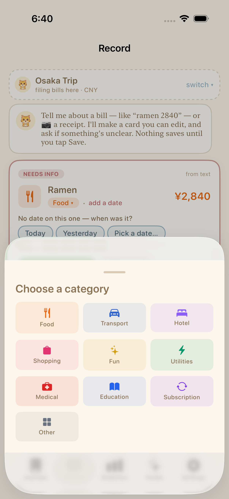
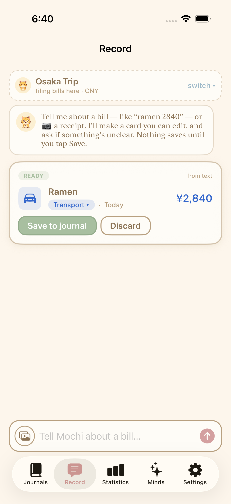
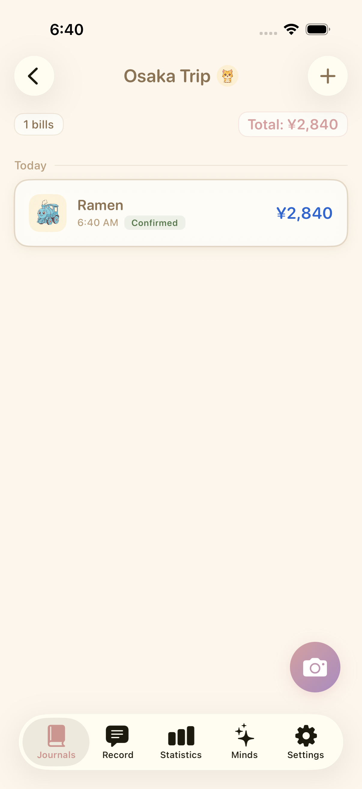

The Record tab and the first-launch notice were built per the approved tech & design docs, then built, unit-tested, and exercised end-to-end on the iPhone 17 Pro simulator (Xcode 26.5). All screenshots below are real captures from the running app during the E2E run.
RecordingSession.edit(...), RecordingSession.setMerchant(...), and the missing-date gap's Today + Yesterday options.DraftExtractor (text → draft, raw category values, no guessed date/amount) and AIRecognitionMapper (AI result → draft, unparseable date → rawDateText).RecordCoordinator (@MainActor @Observable, the single SwiftData writer), RecordView (journal selector, card thread, input bar), AgentCardView + the bottom edit drawer (date picker / category grid / number pad / merchant text + recents).WelcomeNoticeView (one-time, UserDefaults flag, no schema change), wired into ContentView; Record added as the 2nd of five tabs.| Test | What it proves | Result |
|---|---|---|
testRecordTextAnswerDateChangeCategorySaves | Happy path: type “ramen 2840” → answer date chip → change category in the drawer → Save → bill appears in the journal (merchant + amount). | PASS |
testMissingAmountBlockedUntilEntered | Adversarial: “ramen” (no amount) → answer date → Save is blocked (opens the amount drawer) → enter amount → only then does it persist. | PASS |
testDiscardDoesNotPersist | A discarded card never reaches the journal. | PASS |
testFirstLaunchNoticeShowsOnce | The welcome notice shows on first launch and never again after “Get started”. | PASS |
testCreateJournalAndAddBillEndToEnd | Pre-existing E2E still green — no regression to the manual flow. | PASS |
Plus 69 unit tests (agent core, validator, edit/setMerchant, Today+Yesterday options, DraftExtractor, AIRecognitionMapper, file cleanup) — all pass.






BillRecord into the journal (count + total update).